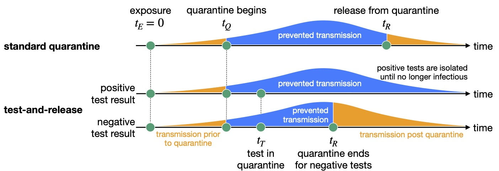

About me
I am a postdoc researcher in theoretical biology. What that means is I spend a lot of time in front of my computer, whilst trying to maintain relationships with practitioners in the life sciences. The rest of my time is spent worrying about a career in science and academia, and questioning why it is so hard to find brown sugar here in Switzerland.
I fulfil many roles in this position: modeller, data analyst, programmer, supercomputer tamer, …. However, with a background in mathematics and physics I also enjoy the analytical side of life. Quantitative biologist may be overselling my life-science credentials, but it is a catchy title so I will stick with it.
I specialise in combining all of the above approaches: creating models that are simple enough to be analysed mathematically and simulated efficiently, whilst still maintaining some contact with reality. The greatest satisfaction comes when the mathematics tells you something unknown about computational results, and these results combined provide new insights into the workings of the world.
My research
The human hematopoietic system produces 1011 cells per day, which emerge from relatively rare hematopoietic stem cells. A complex division tree has evolved to allow multiple cell types to be produced and to amplify the cell numbers. This structure can also prevent the accumulation of mutations, which are inevitable given the huge number of divisions per day. By combining experimental data and mathematical models, we hope to reconstruct this tree and to understand the impact that ageing and disease have on the hematopoietic system.
This project is in collaboration with the Division of Hematology at University Hospital Zürich, and is part of a larger SystemsX.ch project between ETH Zürich, University Hospital Zürich, and University Hospital Basel.
Further sub-projects relate to the dynamics of hematopoietic stem cells, in particular how the effects of disease spread, transplantation, and host conditioning.

Cancer is a genetic disease, requiring multiple alterations to the genome to initiate uncontrolled proliferation. Mathematical models have long been used to further our understanding of this malignancy, and can help us understand cancer initiation, progresssion, and evolution. They can also inform us about the efficacy of treatment strategies, both in terms of clearance of the disease and preventing the emergence of drug resistance.
My interests here lie in understanding the initiation of cancer in stem cells and in tissue, and in treatment strategies which prevent the accumulation of drug-resistant cancer cells.
Interactions between individuals in a population can be complex, and may depend on the current state of the population. The framework of evolutionary game theory has been developed to capture these scenarios and their emergent phenomena. I approach this problem from two sides: Firstly, it is a playground for combining methods from mathematics and physics to arrive at an improved understanding. Secondly, I like to bring the problem (a little bit) closer to reality, by considering the impact of environmental variation and non-constant populations.
→ Analytical methods and approximations for mutant number distributions.
→ Lifetimes in individual-based processes.
→ Combining environmental and population dynamics.
→ …
COVID-19
There is ongoing debate about the appropriate duration of quarantine, particularly since the fraction of individuals who eventually test positive is perceived as being low. We use empirically-determined distributions of incubation period, infectivity, and generation time to quantify how the duration of quarantine affects onward transmission from traced contacts of confirmed SARS-CoV-2 cases and from returning travellers. We also consider the roles of testing followed by release if negative (test-and-release), reinforced hygiene, adherence, and symptoms in calculating quarantine efficacy. We show that there are quarantine strategies based on a test-and-release protocol that, from an epidemiological viewpoint, perform almost as well as a 10 day quarantine, but with fewer person days spent in quarantine. The findings apply to both travellers and contacts, but the specifics depend on the context.
This methodology has been used by the Swiss COVID-19 Science Task Force in policy briefs relating to quarantine duration and cost, as well as by the European Center for Disease Control (ECDC) for their air travel quarantine guidance. From 08.02.2021, the seven day test-and-release strategy will be used in Switzerland.
The infectivity profile describes infectiousness relative to symptom onset time. In He et al. Nat. Med. (2020), it was calculated from the empirical serial interval distribution and incubation period distribution. However, I discovered a critical error in the code which, when corrected, resulted in a very different infectivity profile.
This story was covered by NZZ am Sonntag. Eventually a formal correction was made to the He et al. article.
The generation time distribution, a critical factor in the dynamics and controllability of an epidemic, is often estimated based on the serial interval distribution (distribution of time intervals between symptom onset of an infector and an infectee). The different approaches to this calcuation make different -- and not always explicitly stated -- assumptions about the relationship between infectiousness and symptoms, resulting in different generation time distributions with the same mean but unequal variances. Here, we clarify the assumptions that each approach makes.
icumonitoring.ch is a platform to follow in near-real time beds/ventilators occupancy in intensive care units (ICU) in Switzerland during the COVID19 epidemic. The platform offers projections of ICU occupancy 3- and 7-days ahead by Regions, Cantons, and hospitals. This platform now features on SRF's COVID-19 platform.
I predict ICU bed occupancy in Switzerland due to the current COVID-19 pandemic. In particular, I quantify the risk of exceeding ICU capacity under different epidemic scenarios including a second wave of infections.
Gists
Here's a few pieces of code that I use frequently and find handy to keep around.
Tricks
Here is some mathematical tricks that I have uncovered along the way.
CV
- 2015 — present: PostDoc with Sebastian Bonhoeffer in Theoretical Biology at ETH Zürich.
- 2012 — 2015: PhD with Tobias Galla in the Complex Systems and Statistical Physics group at The University of Manchester, UK.
- 2008 — 2012: Undergraduate Maths and Physics degree (M.Math and Phys) at The University of Manchester, UK.
Contact
You can email me at peter.ashcroft(at)env.ethz.ch.
Occasionly I tweet @Peter_Ashcroft
|
Further details can be found on our groups page: |
My natural habitat is located in the Umweltsystemwissenschaften department at ETH Zürich, and my niche is:
CHN H74
Universitätstrasse 16
8092 Zürich
Switzerland
For fun
Academic Genealogy
Peter Ashcroft ← Tobias Galla ← David Sherrington ← Samuel Edwards ← Julian Schwinger ← Isidor Isaac Rabi ← Albert Potter Wills ← Arthur Gordon Webster ← Hermann von Helmholtz
|
This information is made available by the Mathematics Genealogy Project: |
Cycling
You can see what I get up to on two wheels here →